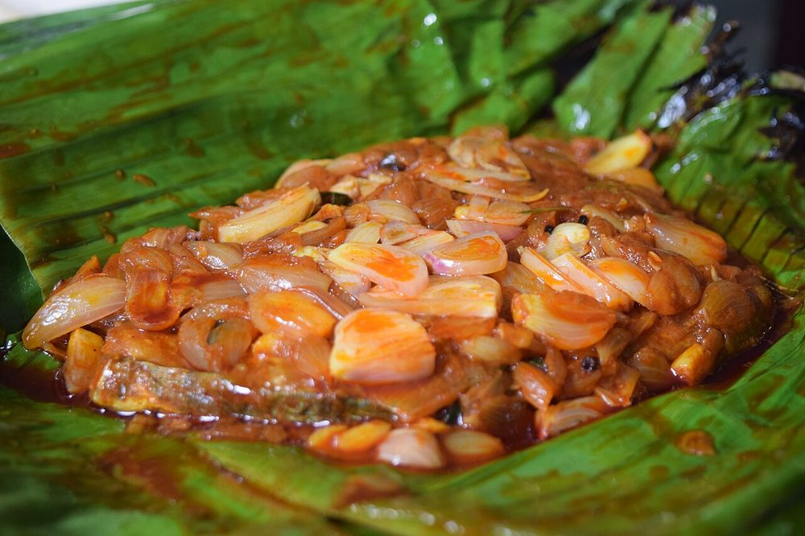

Contains: fish
Ingredients
Quantities for 2.
- 2 whole, about 300g each, scored Fishkarimeen (pearl spot) is the fish; pomfret or tilapia stand in
- 10, sliced Shallot
- 1 tbsp, chopped Ginger
- 8 cloves, chopped Garlic
- 4, slit Green Chilli
- 3 sprigs Curry Leaves
- 2 tsp Chilli Powder
- 1 tsp Turmeric
- 1 tsp Black Pepper
- 10g Tamarind
- 5 tbsp Coconut Oilcoconut oil, not a substitute; it is half the flavour
- 1 Lemon
- to taste Salt
Cookware
stovetop, tawa
Checked against the ingredient list for ten allergens: milk, egg, fish, crustaceans, tree nuts, peanuts, sesame, mustard, soy and gluten. Brands vary, so read the label on anything new to you.
Before you start
- Pollichathu means charred. The leaf is not a serving conceit; it scorches and perfumes the fish while trapping the steam.
- If you cannot get banana leaf, foil works for the steam but you lose the aroma entirely.
Method
- Score the fish to the bone on both sides. Rub with the turmeric, half the chilli powder, salt and lemon, then refrigerate 30 minutes.
- Shallow fry the fish 3 minutes a side in 3 tbsp of the coconut oil. Lift out.
- In the same pan, fry the shallots until soft, then the ginger, garlic, green chilli and curry leaves.
- Add the remaining chilli powder, pepper and tamarind with a splash of water and cook to a thick masala.
- Soften a banana leaf over a flame. Spread masala on it, lay the fish down, cover with more masala and wrap tightly.
- Cook the parcel on a tawa 6 minutes a side on low heat until the leaf blackens and the kitchen smells of it.Low heat. The leaf should scorch slowly, not catch fire.
Safe temperatures: Fish is done at 63°C / 145°F, or when it turns opaque and flakes easily. Reheat leftovers to 74°C / 165°F. FoodSafety.gov
Storage
Best eaten straight from the leaf. It keeps a day refrigerated; reheat in the parcel on a low tawa.
Nutrition Medium estimate
High protein: 32 g a serving, 25% of the calories
| Per serving231 g | Per 100 g | |
|---|---|---|
| Calories | 519 kcal | 225 kcal |
| Protein | 32.4 g | 14 g |
| Carbohydrate | 13.3 g | 6 g |
| of which sugars | 3.1 g | 1 g |
| Fibre | 2.4 g | 1 g |
| Fat | 37.3 g | 16 g |
| of which saturated | 28.8 g | 12 g |
| of which unsaturated | 4.9 g | 2 g |
Ingredients given to taste count as zero, so the real figures run a little higher. Nearest database match used for curry leaves. Estimated from raw ingredients using USDA FoodData Central.
More like this: Gluten-free Indian recipes · Dairy-free Indian recipes · Kerala recipes
Times, yields, allergens and nutrition are guidance. Use your own judgement on doneness and on storing. More in About.